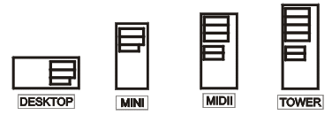

Jednostka centralna
Płyta główna | Procesor | pamięć wewnętrzna | pamięć zewnętrzna
karty rozszerzeń | Obudowa
Płyta główna
Podstawowe parametry płyty głównej:
- rodzaj zamontowanego Chipsetu:
- dla procesorów firmy Intel;
- dla procesorów AMD;
- rodzaj zamontowanego układu Bios (Award, Ami, Phoenix);
- częstotliwość zegara magistrali systemowej (zewnętrzna) (FSB);
- pamięć Cache - obecnie montowana wewnątrz procesora;
- rodzaj gniazda dla poszczególnych procesorów (Slot / Socket);
- ilość gniazd modułów pamięci RAM oraz maksymalna ilość pamięci możliwej do zainstalowania w systemie;
- ilość wolnych gniazd dla kart rozszerzających (ISA, PCI, Dual PCI, AGP, PCI Express x1, PCI Express x16);
- max. częstotliwość taktowania procesora;
- złącza IDE, Serial ATA;
- porty i złącza: COM, LPT, USB 1.1, USB 2.0, IEEE 1394 (inaczej Firewire, iLink), SCSI.
Tab.1. Gniazda umieszczone z tyłu komputera:
| PS/2 |
Gniazdo klawiatury i myszy. |
| COM 1, COM 2 |
Złącza szeregowe. |
| LPT 1 |
Złącze równoległe. |
| USB |
Uniwersalna szyna danych - możliwe podłączenie każdego urządzenia wyposażonego w to złącze. |
Rys.1. Rozmieszczenie gniazd wej/wyj z tyłu komputera.
Procesor
Rodzaje procesorów:
- Intel: Pentium III, Pentium IV, Celeron, Celeron II;
- AMD: Atlon, Duron, Athlon XP +, Athlon 64;
Podstawowe parametry procesorów:
- zewnętrzna częstotliwość taktowania procesora (FSB);
- wewnętrzna częstotliwość taktowania procesora;
- ilość pamięci Cache L1 i L2;
- zestaw dostępnych rozkazów (oprócz standardowych dodatkowo MMX, SSE, 3D-NOW);
- rodzaj zastosowanej obudowy i wyprowadzeń.
Najważniejsze elementy procesora:
- CPU - Central Procesor Unit (całość);
- ALU - Arithmetic Logic Unit (główna jednostka wykonawcza, moduł arytmetyczno-logiczny);
- FPU - Floating Point Unit (jednostka zmiennoprzecinkowa, koprocesor arytmetyczny);
- SIMD - Single Instruction Multiple Data (wykonywanie tej samej instrukcji na wielu danych jednocześnie);
- Cache L1, L2 - szybka pamięć wewnętrzna.
Pamięć wewnętrzna
RAM - pamięć operacyjna (robocza) komputera.
Rodzaje najczęściej stosowanej pamięci RAM:
- SRAM - statyczna pamięć RAM;
- DRAM - dynamiczna pamięć RAM;
- SDRAM - pamięć DRAM wyposażona w interfejs synchroniczny;
- DDR SDRAM - Double Data Rate SDRAM;
- RDRAM (Rambus Direct RAM).
ROM – Pamięć stała, tylko do odczytywania.
Informacja jest przechowywana stale nie ulega zniszczeniu ani zmianie. Pamięć ROM nie może być modyfikowana, można z niej tylko odczytywać dane.
Z tego też względu służą do przechowywania kluczowych informacji jak np. konfiguracja BIOS'u czy modemu.
Pamięć zewnętrzna (pamięć masowa)
Służy do przechowywania dużych ilości danych;
Przykłady:
- stacje dyskietek (FDD - Flopy Disc Drive);- służy do zapisu i
odczytu dysków elastycznych o odpowiedniej pojemności (360 kB; 720 kB; 1,2 MB; 1,44 MB);
- dyski twarde (HDD - Hard Disc Drive);) - urządzenie służące
do zapisu i odczytu gromadzonych informacji; pojemność mierzy się odpowiednio w MG i GB; dyski twarde są podstawowym nośnikiem danych w komputerze; umieszczone są zwykle na stałe w obudowie komputera; składają się z kilku lub kilkunastu płaskich, okrągłych dysków, których powierzchnie służą do przechowywania informacji.
- napęd CD-ROM;- napęd służący tylko do odczytu dysków CD, CD-R, CD-RW, CD-Audio itd.; pojemność standardowej płyty CD wynosi 650 MB (dziś 700 MB);
- napęd DVD-ROM.- napęd służący tylko do odczytu dysków DVD-ROM, możliwe jest na nim również odtwarzanie płyt CD.
Karty rozszerzeń
Karty umożliwiające rozszerzenie podstawowych funkcji komputera o kolejne, wzbogacające jego działanie.
Przykłady:
- karta grafiki - karta rozszerzeń, umiejscawiana na płycie głównej poprzez gniazdo AGP (coraz rzadziej PCI, wyłącznie w bardzo starych modelach ISA); odpowiada w komputerze za obraz wyświetlany przez monitor; karty graficzne różnią się między sobą szybkością pracy, wielkością pamięci RAM, wyświetlaną rozdzielczością obrazu, liczbą dostępnych kolorów oraz częstotliwością odświeżania obrazu; karta graficzna składa się z czterech podstawowych elementów: płytki drukowanej, głównego procesora, pamięci wideo i układu RAMDAC (który często jest zintegrowany z procesorem w jednej obudowie);
- karta dźwiękowa - umożliwia odważanie dźwięków przez komputer;
- modem - pozwala na dołączenie komputera z siecią Internet poprzez stacjonarną linię telefoniczną;
- karta sieciowa - umożliwia połączenie komputera z innym komputerem lub z siecią komputerową
Obudowa
Jest jak gdyby skóra komputera. W jej wnętrzu umieszczana jest jednostka centralna wraz z kartami rozszerzeń. Rodzaj obudowy może zadecydować o rodzaju płyty głównej umieszczonej wewnątrz niej, a co za tym idzie również o innych parametrach komputera (rodzaj procesora, ilość pamięci czy kart rozszerzeń). Rozmieszczenie elementów na płycie głównej jest standaryzowane (np. ATX).

Rys.2. Rodzaje obudów komputera